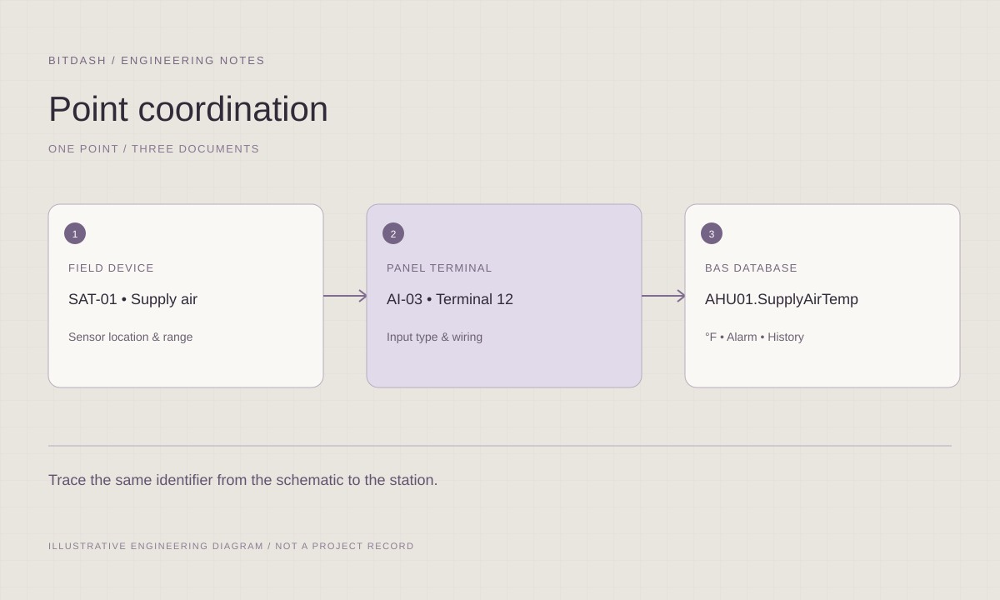

Preconstruction
Organize scope clarifications, estimating inputs, deliverable registers and the information needed to start engineering.
 S O L U T I O N SLet’s talk ↗
S O L U T I O N SLet’s talk ↗Engineering coordination, issue tracking and clear project reporting.
Discuss your project ↗
Organize scope clarifications, estimating inputs, deliverable registers and the information needed to start engineering.
Track drawings, sequences, programming, graphics and integrations against agreed review and release milestones.
Make readiness, outstanding issues, owner decisions and closeout requirements visible before handover.
A shared view of engineering progress, outstanding decisions, and the next actions required.
View supported platforms ↗Define engineering boundaries, deliverables, dependencies, review owners, and interfaces with mechanical, electrical, IT, and commissioning teams.
Organize submittal, programming, graphics, integration, testing, and closeout milestones around the overall project schedule.
Maintain technical review logs, track unanswered questions, coordinate comments, and record the decisions affecting controls implementation.
Track packaged-equipment interfaces, network information, integration maps, access prerequisites, and other inputs needed to release work.
Document scope changes, unresolved assumptions, impacts, and technical risks for review by the responsible project leads.
Prepare engineering status updates, readiness reviews, punch-list tracking, and a structured closeout deliverables register.
Organize estimating inputs, bid clarifications, deliverable registers, and engineering work packages so your project leads can plan resources and review progress.
We support the project lead with a clear view of technical dependencies, review decisions and deliverable status. The focus is the building automation work package and its interfaces with the wider project.

Map responsibilities across controls, mechanical, electrical, IT and commissioning teams. Identify the inputs each work package needs and who owns the response.
Maintain a usable submittal and RFI log, including current status, decision owner and effect on the engineering release. Keep assumptions visible until they are resolved.
Use concise status updates that explain what is complete, what is blocked and what decision comes next. Record scope changes for the responsible project lead to review.
Contract scope, deliverables, schedule, and stakeholders
Current submittals, RFIs, engineering status, and issue logs
Agreed reporting cadence and decision authority
File formats, review rounds and final acceptance responsibilities are defined with your team at the start.
Define the engineering package ↗Coordinate station engineering, JACE and Supervisor dependencies, licenses, driver inputs, IT requirements, and release milestones.
Final scope follows the installed version, licensing and approved access.The BAS engineering work package: technical inputs, review owners, submittals, RFIs, dependencies, release milestones and closeout. Agree the reporting cadence and decision authority with the responsible project lead.
Maintain a current issue and change record showing the affected requirement, owner, status and potential effect on deliverables. Link approved changes to the relevant drawing, application or test revision.